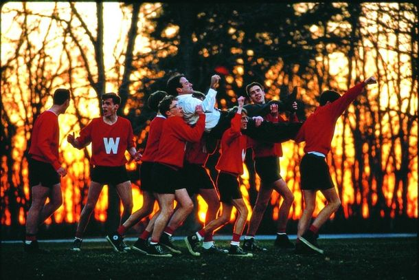

Lançado em 1989 e dirigido por Peter Weir, "Sociedade dos Poetas Mortos" é um clássico cinematográfico que continua a tocar os corações dos espectadores com sua poderosa mensagem sobre a vida e a educação. O filme, estrelado por Robin Williams, retrata a história de John Keating, um professor de inglês em uma escola preparatória conservadora, que desafia seus alunos a pensar de maneira independente e a buscar seus próprios sonhos.
O impacto emocional do filme é inegável, pois explora temas universais como a busca pelo significado da vida, a importância da autoexpressão e o valor da coragem para seguir os próprios sonhos. A história se desenrola com uma profundidade que ressoa com muitos, tornando "Sociedade dos Poetas Mortos" um filme que provoca reflexões profundas sobre as escolhas que fazemos e o legado que deixamos.